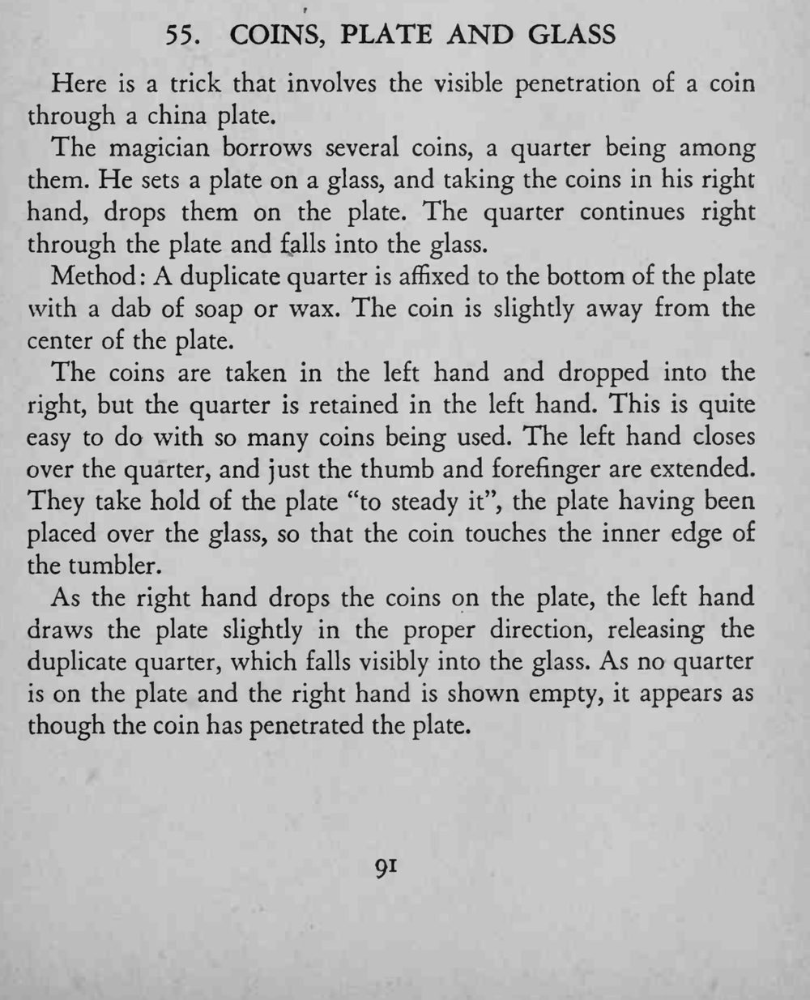

借来几枚硬币，其中一枚 25 美分落到盘子上，竟穿过瓷盘，当啷一声落进下面的玻璃杯里。
左手扳盘的方向要正好让暗币落进杯里，撒币与扳盘的动作要同时发生。

Here is a trick that involves the visible penetration of a coin through a china plate. The magician borrows several coins, a quarter being among them. He sets a plate on a glass, and taking the coins in his right hand, drops them on the plate. The quarter continues right through the plate and falls into the glass. Method A duplicate quarter is affixed to the bottom of the plate with a dab of soap or wax. The coin is slightly away from the center of the plate. The coins are taken in the left hand and dropped into the right, but the quarter is retained in the left hand. This is quite easy to do with so many coins being used. The left hand closes over the quarter, and just the thumb and forefinger are extended. They take hold of the plate "to steady it", the plate having been placed over the glass, so that the coin touches the inner edge of the tumbler. As the right hand drops the coins on the plate, the left hand draws the plate slightly in the proper direction, releasing the duplicate quarter, which falls visibly into the glass. As no quarter is on the plate and the right hand is shown empty, it appears as though the coin has penetrated the plate.